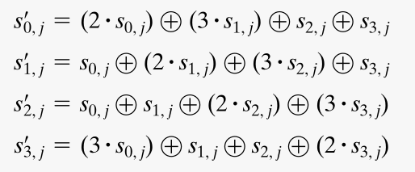

Advanced Encryption Standard (AES)
Lecture Week 06 – Mon 06 November 2023
The structure of AES
 Operates on plaintext message blocks of 16 bytes = 128 bits.
Operates on plaintext message blocks of 16 bytes = 128 bits.- Various key lengths allowed, 16, 24 or 32 bytes. Ciphers referred to as AES-128, AES-192 or AES-256, depending on how many bits used in key.
- Throughout encryption (and decryption) the message block is maintained as a \(4 \times 4\) array of bytes. This is referred to as the state.
- First four bytes form the first column, next four bytes the second column, and so on.
- An initial transformation of the state is followed by \(N\) rounds. Where \(N\) depends on the ley length used.
- \(N=10\) for 128 bit key.
- \(N=12\) for 192 bit key.
- \(N=14\) for 256 bit key.
- The key passes through a key explansion transformation to provide \(N+1\) sub-keys to be used in the initial transformation and \(N\) rounds.
- Each sub-key consists for four 4-byte words, which form the columns of the round key matrix.
AES detail
 This figure exposes the transformations within each round, for AES-128. The other schemes are similar.
This figure exposes the transformations within each round, for AES-128. The other schemes are similar.- Note that is departs from the Feistel design. There is no notion of dividing the block into halves.
- Rounds 1 - 9 consists of four transformations
- Substitute bytes: and S-box type permutation of the bytes of the state.
- Shift rows: a simple permutation of the bytes within each row of the state.
- Mix columns: a transformation that combines the bytes within each column of the state. This transformation utilies the \(\text{GF}(2^8)\) field.
- Add round key: bit-wise \(\text{XOR}\) of the state with the appropriate round key matrix.
- The decryption algorithm reverses all the transformations. At each horizontal level, the intermediate states of the encryption and decryption algorithms are the same.
Substitute bytes
 This figure shows the how the substitute bytes transformation is defined.
This figure shows the how the substitute bytes transformation is defined.- For each entry of the incoming state matrix, i.e. for each byte
- the first four bits denote the row index \(x\) of the S-box
- the second four bits denote the column index \(y\) of the S-box
- the S-box entry at that row and column is a byte that replaces the original byte of the state.
- After replacing each entry of the incoming state matrix, we get the outgoing state matrix.
The S-box itself
 This figure shows the S-box.
This figure shows the S-box.- Remember
- a four bit block is denoted by a hexadecimal digit
0,1,...9,a,b,c,d,e,f. - a single byte (i.e. a 8-bit block) is denoted by a two-digit hexadecimal number.
- a four bit block is denoted by a hexadecimal digit
- A corresponding inverse S-box table is used in the decryption algorithm.
- Lots of detail in Stallings on the contruction of this S-box table.
- Designed like this to minimize any correlation between incoming and outgoing bits.
- An example substitute bytes transformation is shown here

Mix columns transformation
 The equation shows how the incoming state matrix \(s_{i,j}\) is multiplied by the matrix of constants to get the outgoing state matrix \(s'_{i,j}\), shown on the right of the equation.
The equation shows how the incoming state matrix \(s_{i,j}\) is multiplied by the matrix of constants to get the outgoing state matrix \(s'_{i,j}\), shown on the right of the equation.This results in the following transformations within the \(j^{\text{th}}\) column of the state 
The operations \(\oplus\) and \(\cdot\) shown here are the operations from \(\text{GF}(2^8)\), carried out on the entries of the state, i.e. on the bytes, i.e. on the 8-bit blocks which are interpreted as the coefficients of degree 7 polynomials.
So \(\oplus\) is bitwise \(\text{XOR}\) and \(\cdot\) is the multiplication obtained from the multiplication of these polynomials, modulo the polynomial \(m(x) = x^8 + x^4 + x^3 + x +1.\)
The design of this Mix Columns transformation ensures good mixing of the bytes within a column, and the use of the constants
01,02and03results in efficient implementation of the encryption algorithm.
Add round key transformation
- Perhaps the most straightforward, this is just bitwise \(\text{XOR}\) amongst the bit entries of the state and round key matrices.
- Consider the examples shown here
 of \[\text{incoming state} \oplus \text{round key} = \text{outgoing state}\]
of \[\text{incoming state} \oplus \text{round key} = \text{outgoing state}\]
Key expansion in AES
- Key expansion is the process where the initial key is expanded to produce the \(N+1\) round keys for the initial transformation and the \(N\) rounds of AES.
- Each round key consists of four 4-byte words, i.e. the four columns of the round key matrix.
Key expansion in AES-128
 The \(i^{\text{th}}\) of the \(N+1\) round keys consist of the four keywords \[w_{4i + 0}, w_{4i + 1},w_{4i + 2},w_{4i + 3}.\]
The \(i^{\text{th}}\) of the \(N+1\) round keys consist of the four keywords \[w_{4i + 0}, w_{4i + 1},w_{4i + 2},w_{4i + 3}.\]- The 16 bytes, \(k_0, k_1, \dots, k_{15}\), of the initial key form the first four key words \(w_0,w_1, w_3, w_3\) as shown.
- An iterative process creates the 40 subsequent key words.
- for \(j=1,2,3\), and \(i =1,\dots, 10\), \[w_{4i+j} = w_{4i+j-1} \oplus w_{4(i-1)+j}.\]
- for \(j=0\) and \(i =1 \dots 10\), \[w_{4i} = g(w_{4i-1}) \oplus w_{4(i-1)}.\]
- the function \(g\) is the composition of
- a circular left-shift of the word bytes
- an S-box byte substitution using the same S-box table as in the AES encryption rounds
- a bitwise \(\text{XOR}\) with the word formed by the bytes RCi, 00, 00, 00. The round constants RCi are shown on table on next slide.